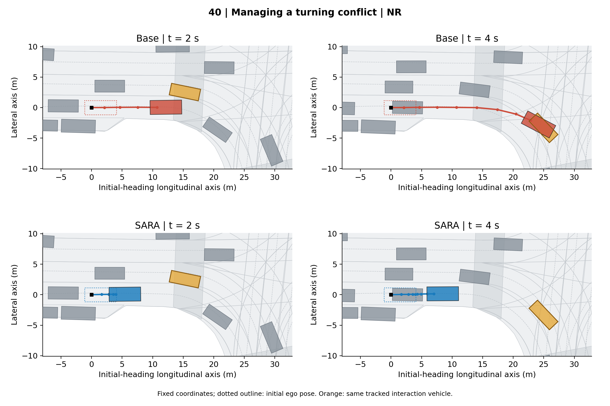
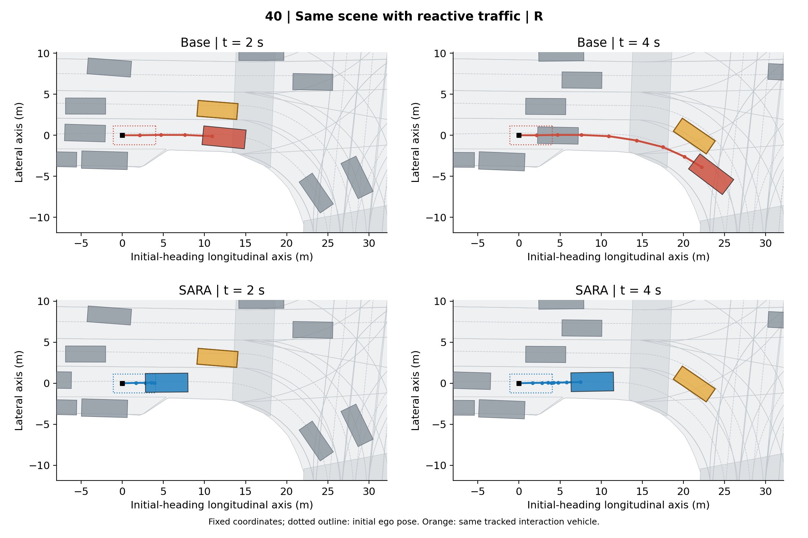
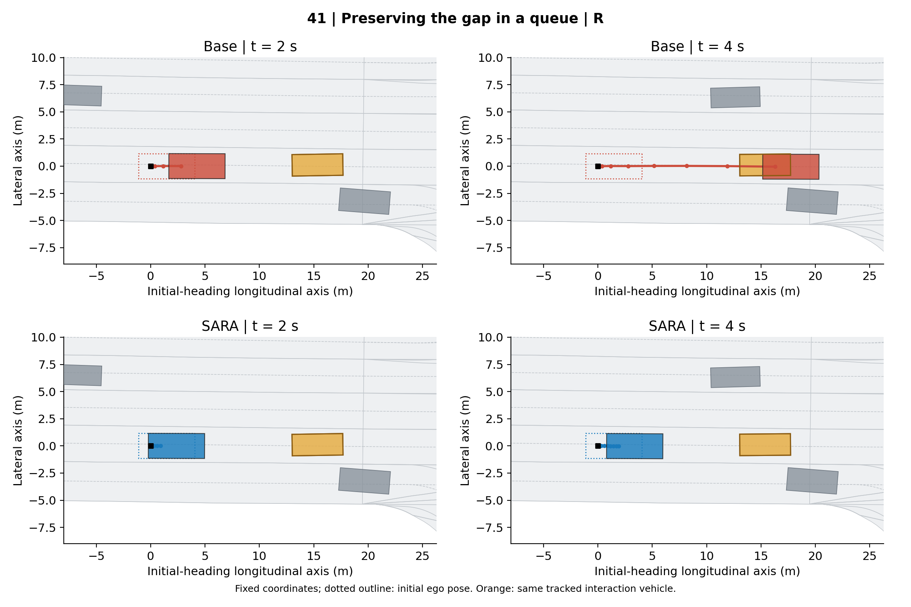
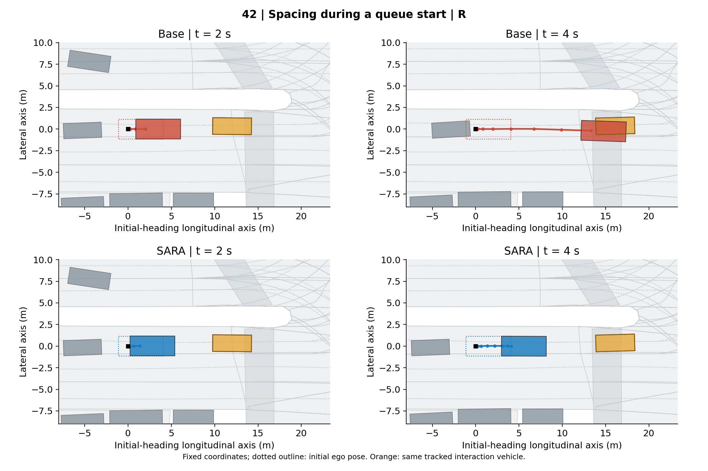

优先看 40。上排 Base、下排 SARA；左列 2 秒、右列 4 秒。橙色是同一辆交互车辆，固定坐标。结论仅限四秒；40 的 NR 与 R 分开呈现，不跨模式比较。
Base 转弯时追近橙色车辆，2 秒间隔约 0.43 米，2.5 秒采样起出现车身重叠。SARA 先减速保留间距，4 秒与橙车相隔约 11.59 米。NC/TTC 均为 0→1。SARA 此时尚未完成右转，进度低于 Base，体现安全与进度的取舍。

同场景的反应式交通补充：Base 无采样碰撞，但 4 秒与橙车仅隔约 0.44 米，TTC=0；SARA 与橙车相隔约 7.28 米，TTC=1。此组 NC 两边均为 1，不得描述为 Base 已发生碰撞。

前车仍在路口排队，Base 持续加速接近，3.5 秒采样起出现碰撞；SARA 保持低速与间距，4 秒距橙车约 7.06 米。NC/TTC 均为 0→1。属于跟车安全备选。

路口车流起步时，Base 追近过快，3.5 秒采样起发生碰撞；SARA 跟随前进后减速，4 秒距橙车约 5.69 米。NC/TTC 均为 0→1。与 41 同属跟车大类，供选择其中一例。
